1. 简介
该文档的PDF版本已发布 |HERE|。
文档中的示例可通过 |HERE| 获取。
1.1. Contexte
本文档并非面向初学者，而是面向具有扎实Java经验的用户。本文档参考了以下资料：
与我以往撰写的其他文档不同，本文主要侧重于实例演示，对理论的探讨较少。不过，每个示例都配有说明，且文档内容具有逻辑连贯性。
ReactiveX 是一组用于简化异步编程及处理所获数据的库：
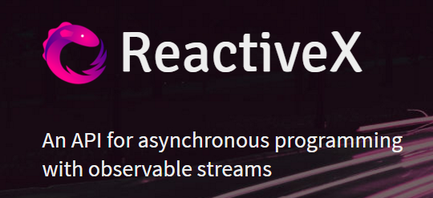 |
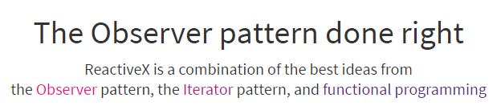 |
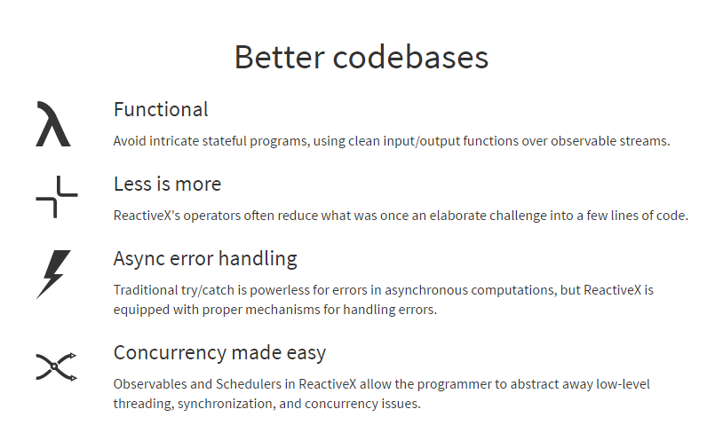 |
Rx 库已在多种语言中实现：
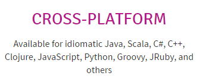 |
本文重点关注以下库：
- RxJava 适用于 Java 环境；
- RxAndroid，这是针对 Android 环境的 RxJava 的特化版本；
- RxSwing，作为 RxJava 的特化版本，适用于 Swing 环境；
响应式编程的概念乍看之下相当复杂。因此，本文档原则上不面向初学者。尽管如此，我已竭尽全力解释了所使用的代码，初学者也能通过本文档熟悉响应式编程。
1.2. 使用的工具
以下示例已在以下工作环境中经过测试：
1.3. 示例代码
以下示例的代码可在 |ICI| 的 [dvp/exemples] 文件夹中找到。
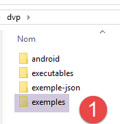 | 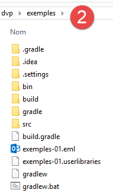 |
文件夹 [dvp/exemples] [2] 是一个 Gradle 项目，其中包含本文档中的大部分示例。所有支持 Gradle 项目管理器的 IDE 均可打开该文件夹。 IntelliJ IDEA 原生支持该功能。对于 Eclipse 或 NetBeans，则需要安装插件。使用 IntelliJ IDEA Community Edition 时，可按以下步骤操作：
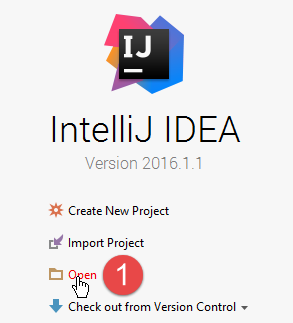 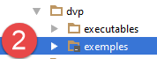 | 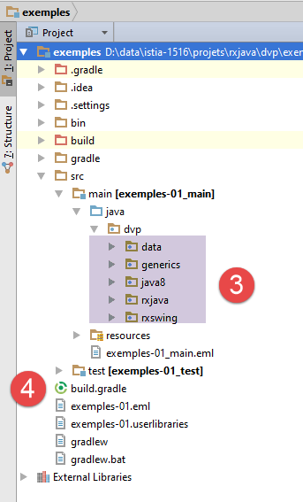 |
项目 [exemples] 通过以下文件进行配置：[build.gradle] [4]：
buildscript {
repositories {
mavenCentral()
}
}
apply plugin: 'java'
jar {
baseName = 'exemples-01'
version = '0.0.1-SNAPSHOT'
}
repositories {
mavenCentral()
}
dependencies {
compile('io.reactivex:rxswing:0.25.0')
compile('io.reactivex:rxjava:1.1.3')
compile('com.fasterxml.jackson.core:jackson-databind:2.7.3')
}
task wrapper(type: Wrapper) {
gradleVersion = '2.9'
}
- 第 18-22 行：项目的 Gradle 依赖项（待下载的库）；
- 第19行：第2节中Swing示例所需的库；
- 第20行：库RxJava；
- 第 21 行：一个 jSON 库；
- 第 9-12 行：项目编译生成的 Jar 归档文件的属性；
要下载项目所需的依赖项，请按以下步骤操作 [1-4]：
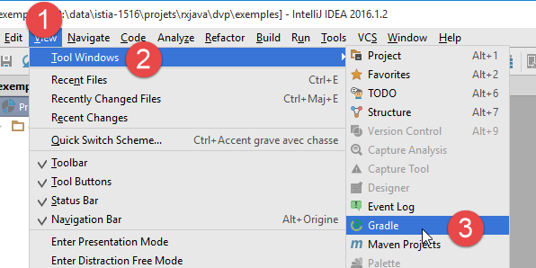 | 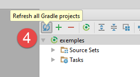 |